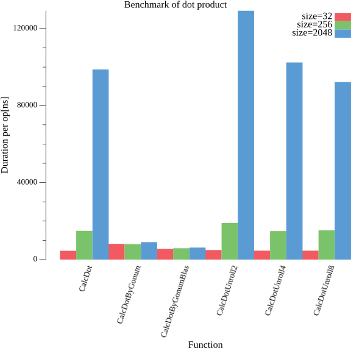

func CalcDot(a, b []float64, size int) float64 {
dot := 0.0
for i := 0; i < size; i++ {
dot += a[i] * b[i]
}
return dot
}Goによるdot積のベンチマーク
Go
線形代数
はじめに
Goにて類似ベクトル検索を実装したところ、dot積の速度がパフォーマンスの律速となりました。 そこで、Goにてドット積のベンチマークを行い、各種実装方法の速度を比較してみました。
やったこと
- Goでベクトルのdot積を計算する関数を実装
- 各種実装方法のベンチマークを取得
対象コード
単純なループによる実装
ループアンロールによる実装（N=2）
func CalcDotUnroll2(a, b []float64, size int) float64 {
const N = 2
dot := 0.0
i := 0
for ; i < size % N; i++ {
dot += a[i] * b[i]
}
for ; i < size; i += N {
mul0 := a[i+0] * b[i+0]
mul1 := a[i+1] * b[i+1]
dot += mul0 + mul1
}
return dot
}ループアンロールによる実装（N=4）
func CalcDotUnroll4(a, b []float64, size int) float64 {
const N = 4
dot := 0.0
i := 0
for ; i < size % N; i++ {
dot += a[i] * b[i]
}
for ; i < size; i += N {
mul0 := a[i+0] * b[i+0]
mul1 := a[i+1] * b[i+1]
mul2 := a[i+2] * b[i+2]
mul3 := a[i+3] * b[i+3]
dot += mul0 + mul1 + mul2 + mul3
}
return dot
}ループアンロールによる実装（N=8）
func CalcDotUnroll8(a, b []float64, size int) float64 {
const N = 8
dot := 0.0
i := 0
for ; i < size % N; i++ {
dot += a[i] * b[i]
}
for ; i < size; i += N {
mul0 := a[i+0] * b[i+0]
mul1 := a[i+1] * b[i+1]
mul2 := a[i+2] * b[i+2]
mul3 := a[i+3] * b[i+3]
mul4 := a[i+4] * b[i+4]
mul5 := a[i+5] * b[i+5]
mul6 := a[i+6] * b[i+6]
mul7 := a[i+7] * b[i+7]
dot += mul0 + mul1 + mul2 + mul3 + mul4 + mul5 + mul6 + mul7
}
return dot
}Gonumによる実装
import (
"gonum.org/v1/gonum/mat"
)
func CalcDotByGonum(a, b []float64, size int) float64 {
av := mat.NewVecDense(size, a[:size])
bv := mat.NewVecDense(size, b[:size])
return mat.Dot(av, bv)
}Gonumによる実装（blas）
import (
"gonum.org/v1/gonum/blas/blas64"
)
func CalcDotByGonumBlas(a, b []float64, size int) float64 {
av := blas64.Vector{
N: size,
Inc: 1,
Data: a,
}
bv := blas64.Vector{
N: size,
Inc: 1,
Data: b,
}
return blas64.Dot(av, bv)
}ベンチマーク
実行環境
$lscpuArchitecture: x86_64
CPU op-mode(s): 32-bit, 64-bit
Byte Order: Little Endian
Address sizes: 43 bits physical, 48 bits virtual
CPU(s): 32
On-line CPU(s) list: 0-31
Thread(s) per core: 2
Core(s) per socket: 16
Socket(s): 1
NUMA node(s): 1
Vendor ID: AuthenticAMD
CPU family: 23
Model: 113
Model name: AMD Ryzen 9 3950X 16-Core Processor
Stepping: 0
Frequency boost: enabled
CPU MHz: 3500.000
CPU max MHz: 4761.2300
CPU min MHz: 2200.0000
BogoMIPS: 6986.90
Virtualization: AMD-V
L1d cache: 512 KiB
L1i cache: 512 KiB
L2 cache: 8 MiB
L3 cache: 64 MiB
NUMA node0 CPU(s): 0-31
Vulnerability Itlb multihit: Not affected
Vulnerability L1tf: Not affected
Vulnerability Mds: Not affected
Vulnerability Meltdown: Not affected
Vulnerability Mmio stale data: Not affected
Vulnerability Retbleed: Mitigation; untrained return thunk; SMT enabled with STIBP protection
Vulnerability Spec store bypass: Mitigation; Speculative Store Bypass disabled via prctl and seccomp
Vulnerability Spectre v1: Mitigation; usercopy/swapgs barriers and __user pointer sanitization
Vulnerability Spectre v2: Mitigation; Retpolines, IBPB conditional, STIBP always-on, RSB filling
Vulnerability Srbds: Not affected
Vulnerability Tsx async abort: Not affected
Flags: fpu vme de pse tsc msr pae mce cx8 apic sep mtrr pge mca cmov pat pse36 clflush mmx fxsr sse sse2 ht syscall nx mmxext fxsr_opt pdpe1gb rdtscp lm constant_tsc rep_good nopl nonstop_tsc cpuid extd_apicid aperfmperf rapl pni pclmulqdq monitor ssse3 fma cx16 sse4_1 sse4_2 movbe popcnt aes xsave avx f16c rdrand lahf_lm cmp_legacy svm extapic cr8_legacy abm sse4a misalignsse 3dnowprefetch osvw ibs skinit wdt tce topoext perfctr_core perfctr_nb bpext perfctr_llc mwaitx cpb cat_l3 cdp_l3 hw_pstate ssbd mba ibpb stibp vmmcall fsgsbase bmi1 avx2 smep bmi2 cqm rdt_a rdseed adx smap clflushopt clwb sha_ni xsaveopt xsavec xgetbv1 xsaves cqm_llc cqm_occup_llc cqm_mbm_total cqm_mbm_local clzero irperf xsaveerptr rdpru wbnoinvd arat npt lbrv svm_lock nrip_save tsc_scale vmcb_clean flushbyasid decodeassists pausefilter pfthreshold avic v_vmsave_vmload vgif v_spec_ctrl umip rdpid overflow_recov succor smca sme sev sev_es検証用データ生成
import (
"math/rand"
)
N := 2048
veca := make([]float64, N)
vecb := make([]float64, N)
for i := 0; i < N; i++ {
veca[i] = rand.Float64()
vecb[i] = rand.Float64()
}ベンチマークコード
import (
"testing"
"reflect"
"runtime"
)
func bench(f func(a, b []float64, size int) float64, size int) func(b *testing.B) {
return func(b *testing.B) {
for i := 0; i < b.N; i++ {
f(veca, vecb, size)
}
}
}
type Result struct {
Size int
Benchmark map[string]testing.BenchmarkResult
}
results := []Result{}
for _, size := range []int{32, 256, 2048} {
type BenchmarkFunc struct {
Name string
Func func(a, b []float64, size int) float64
}
bs := map[string]testing.BenchmarkResult{}
for _, e := range []BenchmarkFunc{
{Name: "CalcDot", Func: CalcDot},
{Name: "CalcDotUnroll2", Func: CalcDotUnroll2},
{Name: "CalcDotUnroll4", Func: CalcDotUnroll4},
{Name: "CalcDotUnroll8", Func: CalcDotUnroll8},
{Name: "CalcDotByGonum", Func: CalcDotByGonum},
{Name: "CalcDotByGonumBlas", Func: CalcDotByGonumBlas},
} {
bs[e.Name] = testing.Benchmark(bench(e.Func, size))
}
results = append(results, Result{Size: size, Benchmark: bs})
}ベンチマーク結果
Code
import (
"fmt"
"sort"
"strings"
)
func calcNsPerOp(b *testing.BenchmarkResult) uint64 {
return uint64(b.T) / uint64(b.N)
}
func makeRow(funcName string, benchmark *testing.BenchmarkResult) string {
nsPerOp := calcNsPerOp(benchmark)
return fmt.Sprintf("<tr><td>%s</td><td>%d</td><td>%d</td><td>%d</td></tr>", funcName, benchmark.N, benchmark.T, nsPerOp)
}
func makeTable(results map[string]testing.BenchmarkResult, size int) string {
var rows []string
for name, result := range results {
rows = append(rows, makeRow(name, &result))
}
sort.Strings(rows)
return fmt.Sprintf(`<table class="dataframe"><caption>size=%d</caption><tr><th>関数名</th><th>回数</th><th>時間[ns]</th><th>1回あたりの時間[ns]</th></tr>%s</table>`, size, strings.Join(rows, "\n"))
}
tables := []string{}
for _, r := range results {
tables = append(tables, makeTable(r.Benchmark, r.Size))
}
display.HTML(strings.Join(tables, "\n"))| 関数名 | 回数 | 時間[ns] | 1回あたりの時間[ns] |
| CalcDot | 257150 | 1172960235 | 4561 |
| CalcDotByGonum | 154552 | 1262189639 | 8166 |
| CalcDotByGonumBlas | 186232 | 1031773081 | 5540 |
| CalcDotUnroll2 | 252372 | 1247609758 | 4943 |
| CalcDotUnroll4 | 269863 | 1246890684 | 4620 |
| CalcDotUnroll8 | 264232 | 1220492800 | 4619 |
| 関数名 | 回数 | 時間[ns] | 1回あたりの時間[ns] |
| CalcDot | 75538 | 1128265829 | 14936 |
| CalcDotByGonum | 136138 | 1091619136 | 8018 |
| CalcDotByGonumBlas | 197648 | 1163284407 | 5885 |
| CalcDotUnroll2 | 60063 | 1143204405 | 19033 |
| CalcDotUnroll4 | 70314 | 1041701688 | 14814 |
| CalcDotUnroll8 | 73861 | 1120812558 | 15174 |
| 関数名 | 回数 | 時間[ns] | 1回あたりの時間[ns] |
| CalcDot | 12385 | 1223137585 | 98759 |
| CalcDotByGonum | 134955 | 1221132298 | 9048 |
| CalcDotByGonumBlas | 319032 | 1985753111 | 6224 |
| CalcDotUnroll2 | 8714 | 1126122663 | 129231 |
| CalcDotUnroll4 | 11245 | 1151313155 | 102384 |
| CalcDotUnroll8 | 12462 | 1148902713 | 92192 |
Code
import (
"math"
"bytes"
"gonum.org/v1/plot"
"gonum.org/v1/plot/plotter"
"gonum.org/v1/plot/plotutil"
"gonum.org/v1/plot/vg"
"gonum.org/v1/plot/vg/draw"
)
func displayPlot(p *plot.Plot) {
var buf bytes.Buffer
c, err := p.WriterTo(6*vg.Inch, 6*vg.Inch, "png")
if err != nil {
panic(err)
}
if _, err := c.WriteTo(&buf); err != nil {
panic(err)
}
Display(display.PNG(buf.Bytes()))
}
p := plot.New()
p.Title.Text = "Benchmark of dot product"
p.X.Label.Text = "Function"
p.Y.Label.Text = "Duration per op[ns]"
p.X.Tick.Label.Rotation = math.Pi / 2.5
p.X.Tick.Label.XAlign = draw.XRight
p.Legend.Top = true
names := []string{}
for name, _ := range results[0].Benchmark {
names = append(names, name)
}
sort.Strings(names)
p.NominalX(names...)
for i, r := range results {
var values plotter.Values
for _, name := range names {
b := r.Benchmark[name]
values = append(values, float64(calcNsPerOp(&b)))
}
bar, _ := plotter.NewBarChart(values, vg.Points(20))
bar.LineStyle.Width = vg.Length(0)
bar.Color = plotutil.Color(i)
bar.Offset = vg.Points(float64(i - 1) * 20)
p.Add(bar)
p.Legend.Add(fmt.Sprintf("size=%d", r.Size), bar)
}
displayPlot(p)
まとめ
ベクトルが小さい場合(size=32)は単純にループして計算するのが一番速い。しかしながら、ベクトルが一定サイス(size=128)を超えるとgonumを使用したほうが高速となる。 ループのアンローリングは効果がない。gonumを使用する場合は、blasを使用するとより高速になる。
参考
[1]
Tokyo, W.W.G. 2021. Go言語を楽しむ5つのレシピ: コタツと蜜柑とゴーファーとわたし. インプレスR&D.